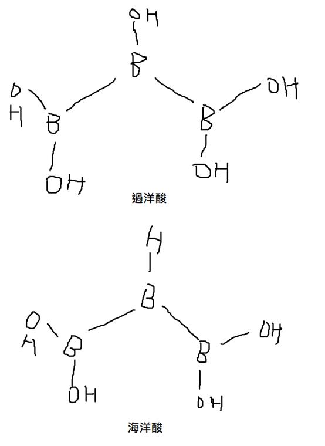

過洋酸世界
經濟體系
星球命名
人類世界使用的星球譯名來自智元的命名。因為智元人很自負，認為自己是星際最聰明的物種，故名作智元。智障元是智元第一個接觸的星球，相對於智元而得名。被染元在被智元發現前就已發生重大核災，全球被核廢料汙染而得名。可惡元是過洋酸世界的星球中，最難被智元征服的，而得名。
歷史
過洋酸世界有著惡名昭彰的3次內戰歷史，即第一到第三次星際大戰。戰爭結果是智元征服了整個過洋酸世界。智元人以強勢武力迫使其他3個星球加入他們的階級生產經濟體系，並將他們納入有條件生產階級。這3個星球原來都是市場貿易經濟體系。第九次星際大戰後，智元人設計了對自己民族非常有利的IQ測試，使得只有智元人才能到達30以上(相當於人類的130以上)，並以此為依據劃分階級。經過其他3個星球多年的努力，智元人在無條件生產階級的比例逐漸降低，最低達到65%。後來由於福林效應，無條件生產階級佔總人口數的比例達到35%，對經濟體系造成威脅。因此，他們修改了階級劃分的門檻。但這門檻的修改也使智元人在無條件生產階級的比例提升到99.9%。過去30年(93.3地球年)間，智元人在無條件件生產階級的比例顯著降低，從99%掉到97%。
過洋酸世界曾經是宇宙精華區，但在發現中五角世界後失去宇宙精華區地位。
場特殊(field-specific)化學性質

過洋酸世界的生命場使得很多其他地方無法存在的分子化合物能夠穩定存在，其中最有名的就是過洋酸和海洋酸。這兩個化合物在過洋酸世界的海洋中普遍存在，也是生命必須的化合物，但在人類世界卻不能穩定存在。若沒有人造生命場的輔助，過洋酸會立即崩解，像炸藥爆炸一樣。智元人已經能夠在人造生命場的輔助下，在人類世界用硼酸製造過洋酸。
科學成就
交通
人造生命場
智元人發明了人造生命場，使過洋酸人能離開過洋酸世界。另外，智元人甚至為超時空宇宙發明了生命場，讓超時空宇宙的人們能夠離開超時空宇宙。不過，他們並不喜歡離開超時空宇宙。
武器
智元人發明的武器對星際造成災難性的影響。不只汙染了許多星球，甚至銷毀了一些無人居住的行星、衛星或恆星。
經濟體系
智元人發明了階級生產經濟體系，在星際交流後被許多星球採用。採用此體系的星球，科技都突飛猛進。
宇宙精華區
星際計時標準
智元人創立了星際統一的度量衡。該度量衡使星際間能夠以一致的單位度量時間、空間、長度、容積、質量、力、能量等。他們甚至發明了測量文明發展程度的標準，儘管有很多爭議。
地理
過洋酸世界的地理範圍包含2個銀河系，這2個銀河系巨觀上位於同一個「超星雲」(超星雲由數個距離很近的銀河系組成)。智元、智障元、被染元位於同一個銀河系，可惡元位於另一個。過洋酸人離開過洋酸世界生命場後，會立即死亡。
透過人造生命場的輔助，過洋酸人在過洋酸世界以外的生活品質無異於在過洋酸世界。因此，過洋酸人在各地都有殖民地。
當地幾何和物理
當地重力常數是6.32×10-10m3kg-1s-2，高達人類世界的9倍，有些人認為是時空幅散的代償。
註：本條目撰寫不易，過程中一直受到過洋酸人干擾。筆者盡量以客觀角度撰寫。